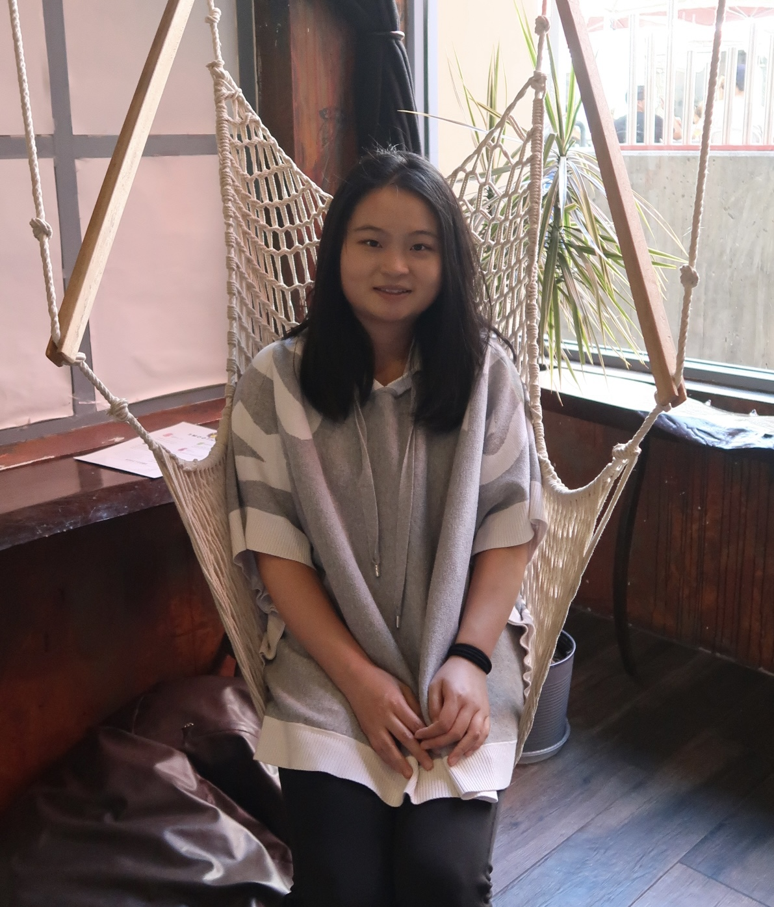
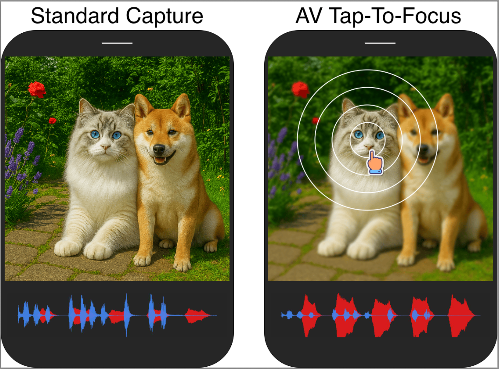
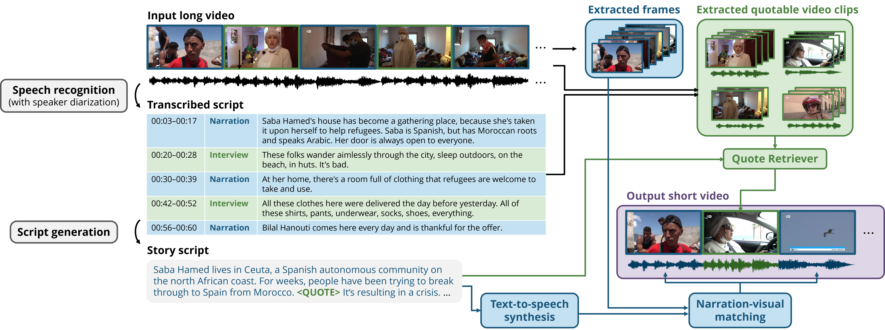
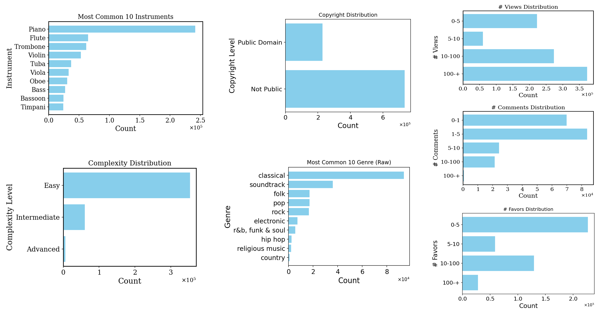
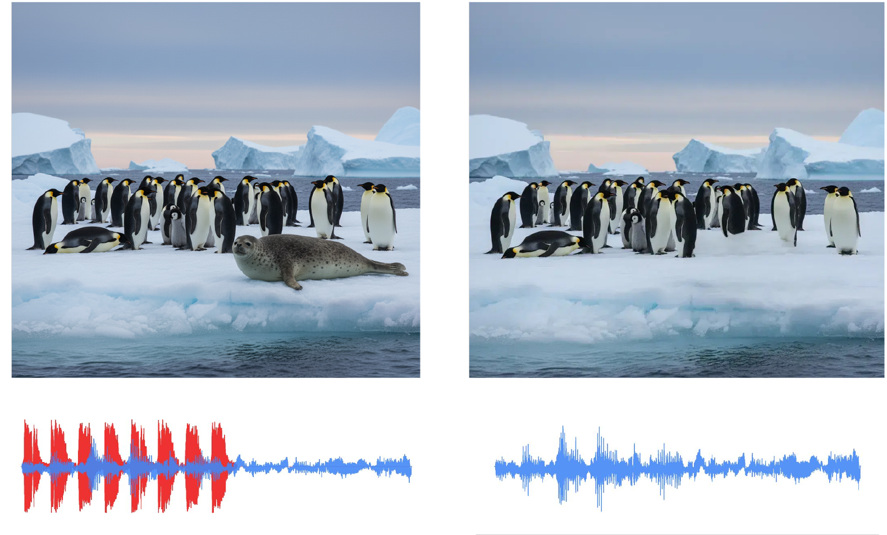
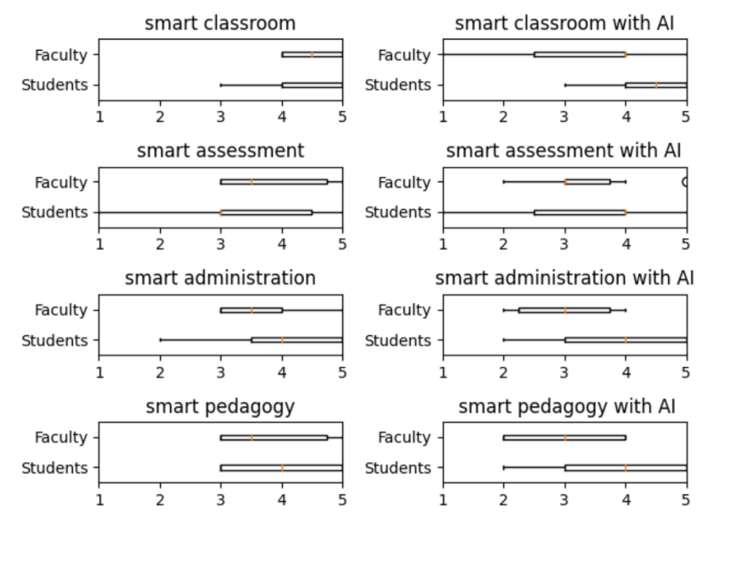
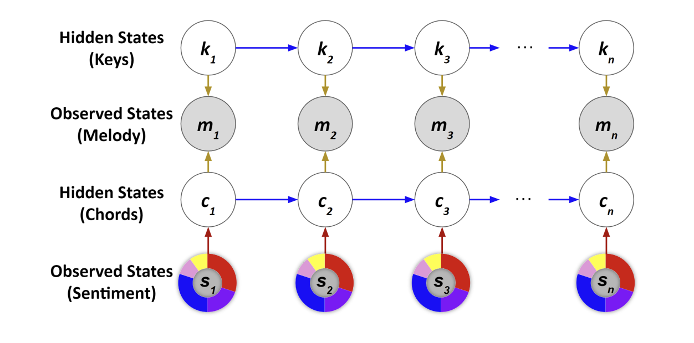

|
Weihan Xu I am a researcher at MIT EECS and MIT Media Lab. I am broadly interested in multimodal learning in creative application. My research vision is to build multimodal systems with user-friendly interfaces that can reason, retrieve, generate, and edit content, ultimately making advanced AI capabilities accessible and useful in everyday life. I have been working closely with researchers at Sony Research, MIT EECS, and Berkeley AI Research on multimodal content stylization. I have been working with Dr. Julian McAuley, Dr. Taylor Berg-Kirkpatrick and Dr. Hao-Wen Dong, Dr. Paul Liang and Dr. Shlomo Dubnov on multimodal retrieval and content generation. I was fortunate to work with Dr. Cynthia Rudin on interpretable music analysis, and Dr. Pardis Emami-Naeini on human-AI interaction. Previously, I did my undergraduate at University of Michigan with double major in computer science(honors) and data science, where I work with Dr. Sardar Ansari and Dr. Kayvan Najarian on time series data analysis in clinic settings. I also worked with Dr. Gongjun Xu on statistical analysis of education assessment data. I began studying music at six and have training in piano, violin, and the French horn. |
 |
{kind=link}
Research |

|
Schrödinger Audio-Visual Editor: Object-Level Audiovisual Removal
Weihan Xu*, Kan Jen Cheng*, Koichi Saito, Jehanzeb Mirza, Tingle Li, Yisi Liu, Alexander Liu, Liming Wang, Masato Ishii, Takashi Shibuya, Yuki Mitsufuji, Gopala Anumanchipalli, Paul Pu Liang Under Review, 2026 arXiv / demo |
|
 |
CAVE: Coherent Audio-Visual Emphasis via Schrödinger Bridge
Kan Jen Cheng*, Weihan Xu*, Koichi Saito, Nicholas Lee, Yisi Liu, Jiachen Lian, Tingle Li, Alexander Liu, Fangneng Zhan, Masato Ishii, Takashi Shibuya, Paul Pu Liang, Gopala Anumanchipalli Under Review, 2026 |
|
 |
REGen: Multimodal Retrieval-Embedded Generation for Long-to-Short Video Editing
Weihan Xu, Yimeng Ma, Jingyue Huang, Yang Li, Wenye Ma, Taylor Berg-Kirkpatrick, Julian McAuley, Paul Pu Liang, Hao-Wen Dong NeurIPS, 2025 arXiv / demo / code |

|
TeaserGen: Generating Teasers for Long Documentaries
Weihan Xu, Paul Pu Liang, Haven Kim, Julian McAuley, Taylor Berg-Kirkpatrick, Hao-Wen Dong The International Conference on Learning Representations (ICLR), 2025 arXiv / demo / code We introduce DocumentaryNet and propose two models TeaserGen-PT and TeaserGen-LR |

|
Generating Symbolic Music from Natural Language Prompts using an LLM-Enhanced Dataset
Weihan Xu, Julian McAuley, Taylor Berg-Kirkpatrick, Shlomo Dubnov, Hao-Wen Dong The 26th International Society for Music Information Retrieval(ISMIR), 2025 arXiv / demo / code We introduce MetaScore and propose a tag conditioned music generation model MST-Tag and a free-form text to symbolic music model MST-Text. |

|
Video-Guided Text-to-Music Generation Using Public Domain Movie Collections
Haven Kim, Zachary Novack, Weihan Xu, Julian McAuley, Hao-Wen Dong The 26th International Society for Music Information Retrieval(ISMIR), 2025 |
|
 |
A New Dataset for Tag- and Text-Based Conditioned Symbolic Music Generation
Weihan Xu, Julian McAuley, Taylor Berg-Kirkpatrick, Shlomo Dubnov, Hao-Wen Dong The 25th International Society for Music Information Retrieval (ISMIR)-LBD, 2024 arXiv We introduce a new symbolic music dataset with rich metadata and captions, MetaScore |
|
 |
A New Dataset, Notation Software, and Representation for Computational Schenkerian Analysis
Stephen Hahn, Weihan Xu, Jerry Yin, Rico Zhu, Simon Mak, Yue Jiang, Cynthia Rudin The 25th International Society for Music Information Retrieval (ISMIR), 2024 arXiv We present a new graph-based representation to support computational schenkerian analysis |
|
 |
Smart Tools, Smarter Concerns: Navigating Privacy Perceptions in Academic Settings
Yimeng Ma, Weihan Xu, Hongyi Yin, Yuxuan Zhang, Pardis Emami-Naeini The Twentieth Symposium on Usable Privacy and Security (SOUPS Poster), 2024 arXiv Addressing privacy concerns related to smart tools in education, where I designed a user study to explore how professors, students, and staff perceive privacy within learning environments |
|
 |
SentHYMNent: An Interpretable and Sentiment-Driven Model for Algorithmic Melody Harmonization
Stephen Hahn, Jerry Yin, Rico Zhu, Weihan Xu, Yue Jiang, Simon Mak, Cynthia Rudin The 30th SIGKDD Conference on Knowledge Discovery and Data Mining - Applied Data Science Track, 2024 arXiv We introduce two major novel elements: a nuanced mixture-based representation for musical sentiment, including a web tool to gather data, as well as a sentiment- and theory-driven harmonization model, SentHYMNent |

|
Equipping Pretrained Unconditional Music Transformers with Instrument and Genre Controls
Weihan Xu, Julian McAuley, Shlomo Dubnov, Hao-Wen Dong Big Data, 2023 arXiv We first pretrain a large unconditional transformer model using 1.5 million songs. We then propose a simple technique to equip this pretrained unconditional music transformer model with instrument and genre controls by finetuning the model with additional control tokens. |
Datasets |
|
DocumentaryNet: Github
MetaScore: Github |
Projects |
|
Project: Accessibility Tools for the Visually Impaired
Collectively (in a group of four) built a website that allows visually impaired people to upload photos of surroundings and describes the photos for them; Designed various features into the website, such as giving warnings if photo includes roadblocks or other obstacles; Constructed the code and user interface for the website with one other team member |
Teaching Experience |
|
Course: Introduction to Deep Learning
Department: Electrical and Computer Engineering, Duke University Instructor: Prof. Vahid Tarokh |
Professional Service |
| Journal Reviewer: International Journal of Computer Vision |
Volunteer Experience |
|
Organization: Shanghai Adream Charitable Foundation
Year: 2020 |
Miscellaneous |
|
Language: English, Chinese Interests: Music, Travel, Roller Coasters, Karting Music Instruments: Piano, French Horn, Violin. Adventures: Bungee Jumping @ 2019, Skydiving @ 2022, Visit the Arctic Circle @ 2022 |